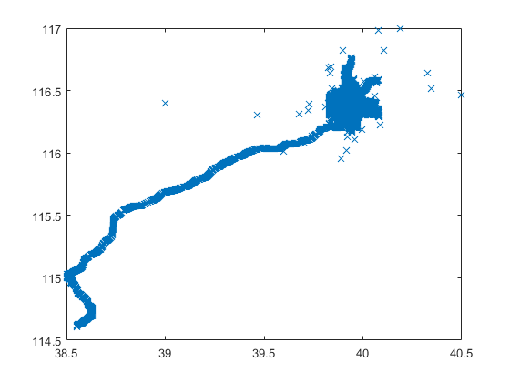
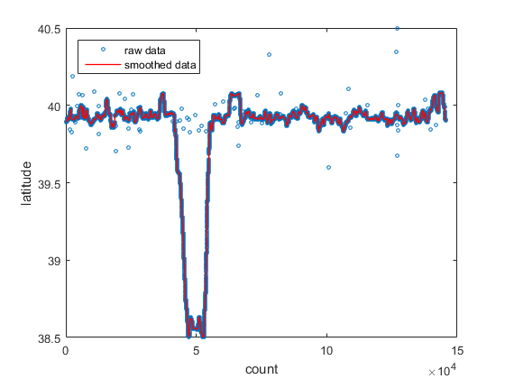
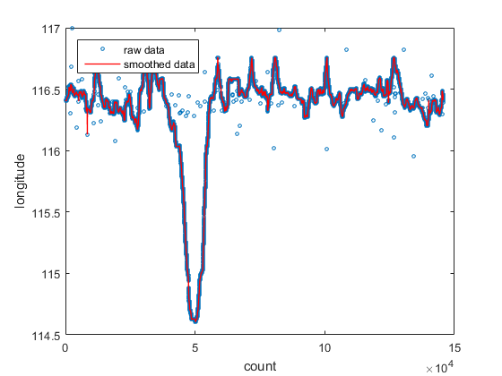
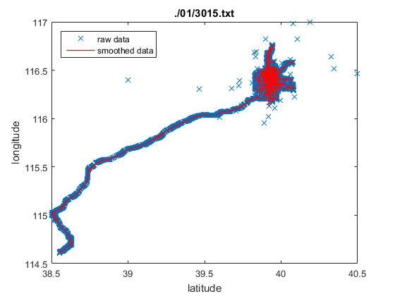
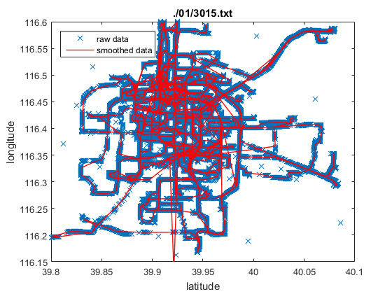

task2
pick a trajectory for a particular trip and determine its smoothed trajectory (using Kalman filter for example or splines)
Contents
loading sample file
this data set is nice because it has both long range travels (from beijing to baoding area) and short range travels (inside beijing city center)
file_name = './01/3015.txt';
[date_time,longitude,latitude] = importfile(file_name, 1);
[date_time,longitude,latitude] = clean_data(date_time,longitude,latitude);
plotting the raw data
we see >50 points that are noisy
h=figure;
plot(latitude,longitude,'x')
 smoothing the data
we use cubic spline to interpolate the trajectory data into a more sparse data, in our most simplistic approach, there is only one parameter, which is manually adjusted
note that lat and lng coordinates are apprximated to be separable, and can be fitted independently
% this parameter is manually adjusted param = 59; % larger the coarser, must be >= 1
latitude
[xData, yData] = prepareCurveData( [], latitude ); figure plot(xData,yData,'o','MarkerSize', 3); hold on; smooth_lat_x = 1:param:xData(end); smooth_lat_y = spline(xData,yData,smooth_lat_x); plot(smooth_lat_x,smooth_lat_y,'r','LineWidth',1); xlabel('count'); ylabel('latitude'); legend('raw data','smoothed data','location','northwest')
longitude
[xData, yData] = prepareCurveData( [], longitude ); figure plot(xData,yData,'o','MarkerSize', 3); hold on; smooth_lng_x = 1:param:xData(end); % 80% more sparse smooth_lng_y = spline(xData,yData,smooth_lng_x); plot(smooth_lng_x,smooth_lng_y,'r','LineWidth',1); xlabel('count'); ylabel('longitude'); legend('raw data','smoothed data','location','northwest')
adding the smoothed trajectory to the original data
using the smoothed lat and lng data
figure(h); hold on; plot(smooth_lat_y,smooth_lng_y,'r','LineWidth',1); title(file_name); xlabel('latitude'); ylabel('longitude'); legend('raw data','smoothed data','location','northwest')
zoomed into the city core
we note that enough details are perserved, with few occasional cases of not enough smoothing and occasional cases of too much smoothing.
xlim([39.8 40.1]); ylim([116.15 116.60]);